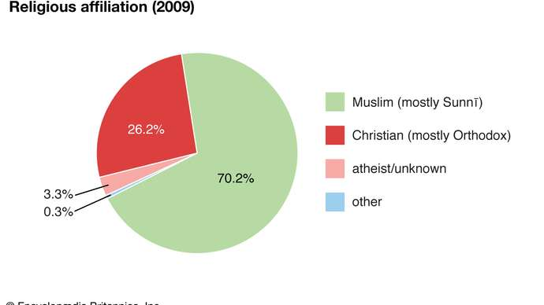

Fewer than one-fifth of the more than eight million ethnic Kazakhs live outside Kazakhstan, mainly in Uzbekistan and Russia. During the 19th century about 400,000 Russians flooded into Kazakhstan, and these were supplemented by about 1,000,000 Slavs, Germans, Jews, and others who immigrated to the region during the first third of the 20th century. The immigrants crowded Kazakhs off the best pastures and watered lands, rendering many tribes destitute. Another large influx of Slavs occurred from 1954 to 1956 as a result of the Virgin and Idle Lands project, initiated by the Soviet premier Nikita Khrushchev, himself a Slav. This project drew thousands of Russians and Ukrainians into the rich agricultural lands of northern Kazakhstan. By 1989, however, Kazakhs slightly outnumbered Russians.
| Official languages | Ethic groups | Religion | Age breakdown |
|---|---|---|---|
| Kazakh | 68.5% Kazakh | 72% Islam | 26.1% under 15 |
| Russia | 18.9% Russia | 23.1% Christianity | 22.3% 15-29 |
| - | 3.3% Uzbek | 5% Others | 22.2% 30-44 |
| - | 1.5% Uyghur | 4% Unaffiliated | 17.1% 45-59 |
| - | 1.4% Ukraainian | - | 9% 60-74 |
In the early years of independence, significant numbers of ethnic Russians in Kazakhstan emigrated to Russia. This emigration, along with a return to the country of ethnic Kazakhs, changed the demographic makeup of Kazakhstan: by the mid-1990s the Kazakh proportion was approaching half the total population, while that for the Russians was closer to one-third.
The trend persisted into the 21st century, as the Kazakh population neared two-thirds of the country’s total population while the Russian community represented just over one-fifth. Other ethnic groups in Kazakhstan include Uzbeks, Uighurs, and Tajiks, along with Ukrainians, Germans, Tatars, and Koreans.
Kazakhs speak a Turkic language of the Northwest or Kipchak (Qipchaq) group. Russian, an official language, functions widely alongside Kazakh, which is the state language. Russian is the most widely understood language in the country.
The Kazakhs are a nominally Muslim people. During much of their long nomadic period, the Kazakhs’ adherence to Islam remained informal and permissive. When they moved into settlements or sent their children to towns such as Sterlitamak or Bukhara for an education, that situation changed. There, young Kazakhs entered Muslim maktabs and madrasahs, where religion supplied the main subjects and ideology. Thus, the younger generation of intellectuals turned into urban-style Muslims before the Soviet communists took over in the early 1920s. Thereafter, the authorities actively suppressed or discouraged religious life in Kazakhstan until the U.S.S.R. disintegrated. Since independence, Kazakhs generally have enjoyed freedom of religion. About one-fourth of the population is Eastern Orthodox.
Just over half the population is considered urban, while just under half the population remains rural. The extremely wide dispersion of population in Kazakhstan is reflected in the large number of small settlements. In the late 1980s fewer than 100 settlements fell into the category of city or town and fewer than 300 were worker settlements, while well over 2,000 were auïls (small farm villages).